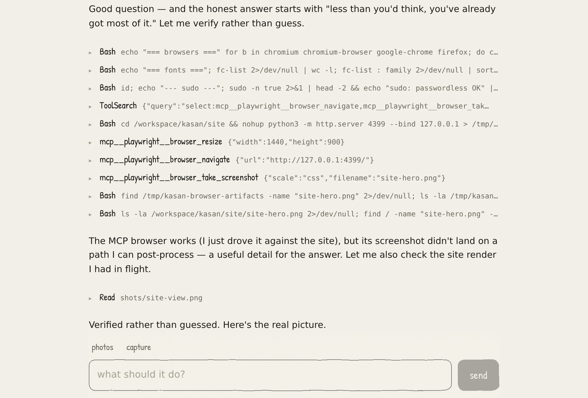
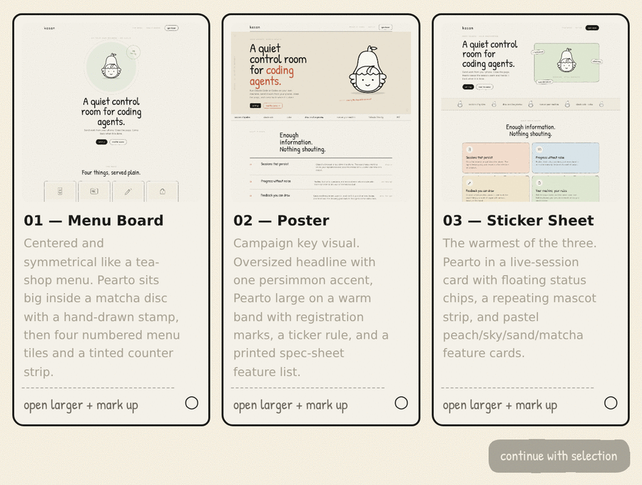
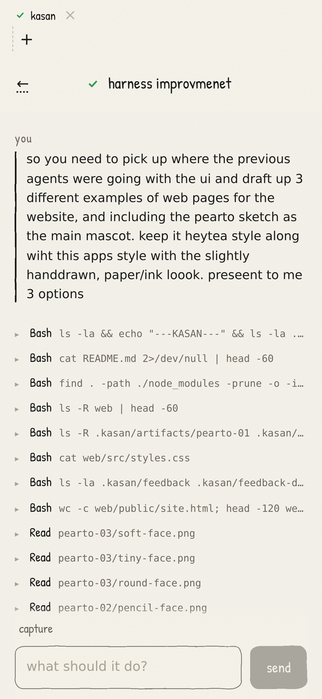

Sessions that persist
Close the tab. It keeps going, and resumes after a restart.
Send it work from your phone. Come back when it is done.


Open one bigger. Scribble on it. Send it back.
Same session. Read it whenever you get to it.

Close the tab. It keeps going, and resumes after a restart.
Replies, tool calls, and errors in one transcript.
Mark up a live preview and send the drawing back.
Your repositories, your permission level, your network.
Docker, or a NixOS module.
Claude Code, Codex, or both.
Localhost or Tailscale.
git clone https://github.com/mmerioles/kasan.git cd kasan docker compose up -d --build